Responses to PYTHIA discussions at GPC meeting 4/2/15
Black: Minutes from GPC meeting
Blue: Notes added by PAs
Fig. 2
Remove Perugia 2010 and 900 GeV data
Done
Will look into Monarsh (sp?) tune, which is approximately an "updated Tune
A" - if it's easy it might be better to make comparisons to that, but it
may or may not be documented well
Monash (http://arxiv.org/abs/1404.5630)
appears to be a PYTHIA 8 tune. That would make it more difficult
to do this with Monash since the code I'm using uses PYTHIA 6. We
can do it if the referee brings it up
Conclusions to draw from this figure:
1. correlation ratio comparable to inclusive ratio
2. PYTHIA doesn't describe inclusive ratios well
Lines 332-340: include if can be supported. Rene will send
reference to OPAL study trying to do this and Christine may poke around at
PYTHIA to see what PYTHIA does and discuss with Jana if we have a
reference we can cite for this.
Summary of OPAL
paper:
OPAL identified quark and gluon jets in two ways:
1. Using MC generators to determine the fraction of all jets
coming from q and g as a function of energy and assuming that there was
little jet energy dependence on the rate of lambda and kaon production,
then fitting the observed rate of lambda and kaon production to
determine the production rates in quark vs gluon jets
2. Tagging symmetric three jet events and measuring the production
rate in quark and gluon jets using those tagged events
The results were that
1. There were 1.1 +/- 0.02 +/- 0.02 times as many K0S in gluon
jets as quark jets from (1) and 0.94 +/- 0.07 +/- 0.07 from (2)
2. There were 1.41 +/- 0.04 +/- 0.04 times as many K0S in gluon
jets as quark jets from (1) and 1.18 +/- 0.10 +/- 0.17 from (2)
So there are more lambdas produced in a
gluon jet than in a quark jet, while there are approximately the same
number of K0S produced in quark and gluon jets. (There are
slightly more particles overall in gluon jets.)
This was qualitatively reproduced in the MC generators studied at the
time.
PYTHIA studies
Rather than redo everything from scratch, we just used some PYTHIA
studies Christine had completed earlier for a different purpose because
this seems to answer the same question. These are from 1.75
billion events at sqrt(s_NN) = 2.76 TeV. The trigger is a gluon or
quark and the associated particle is a charged kaon or a lambda between
3-6 GeV/c. (The results were robust when the pT was changed
slightly but above about 2 GeV/c.) The correlations are below:
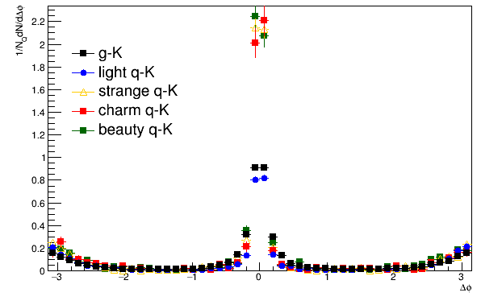 |
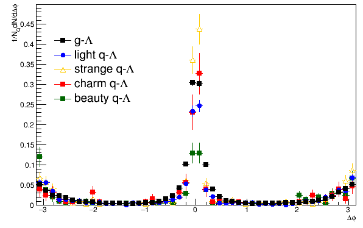 |
The yield for kaons and lambdas is higher
when the trigger is a strange quark than when it is a gluon or a light
quark (u or d). This means that a larger fraction of high pT
lambdas and kaons come from strange jets than the fraction of high pT
unidentified hadrons which come from strange jets.
Make sure discussion of Tune A vs Perugia tunes is in the text.
Fig. 3-5: Remove PYTHIA from Fig. 3 & 4 and leave it in Fig.
5. Remove subsections 1 & 2 with discussion and restructure so
that the discussion is right after the figure. (Had been structured
as it is because the PYTHIA comparisons had made the discussion
repetitive.)
Fig. 3
Will make and distribute a few different versions:
1. w/o PYTHIA, otherwise the same
2. w/o PYTHIA, w/Cu+Cu h-h only (no other h-h) (a) as points (b) as
lines
3. w/o PYTHIA, w/peripheral Au+Au h-h only (no other h-h) (a) as
points (b) as lines
4. With just strange particles
will not update legend for now until we agree on a version to go into the
plot
See below
| 1. w/o PYTHIA, otherwise the same | 2. w/o PYTHIA, w/Cu+Cu h-h only (no other h-h) (a) as points (b) as lines | 3. w/o PYTHIA, w/peripheral Au+Au h-h only (no other h-h) (a) as points (b) as lines | 4. With just strange particles |
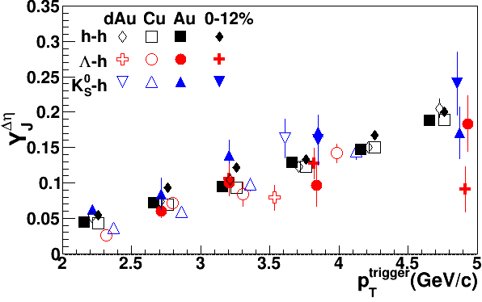 |
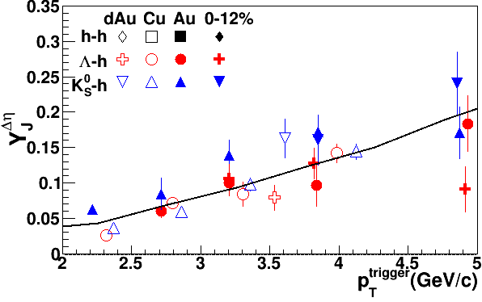 |
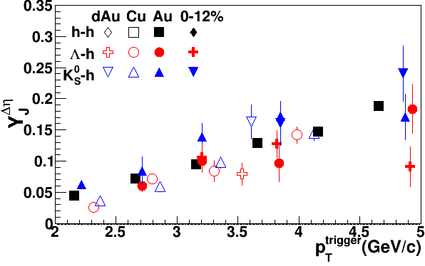 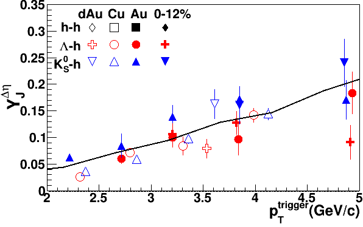 |
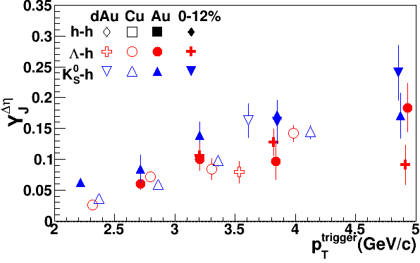 |
Conclusions to draw from figure:
1. No difference between systems
2. Kaons systematically higher than lambdas (Much discussion in GPC
over this point - will try to come up with wording that hopefully everyone
will agree on. Discussion may come up at a future meeting, but
hopefully we will find a decent wording that ends the discussion.)
We went with 3b and moved point (2) to the
npart discussion because we think it is perhaps easier to make the point
with that plot.
Fig. 4
Remove PYTHIA. Will make versions of the figure with fits and
distribute them. Also will look at comparing to some line for the
data instead.
| Without PYTHIA | With fits to data - fit to const, fit to linear dependence |
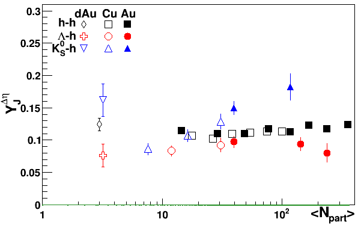 |
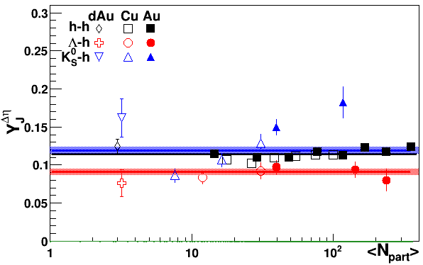 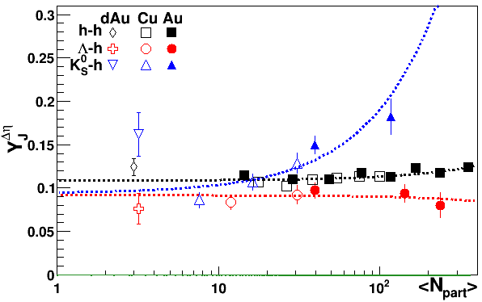 |
We prefer not to have a fit to the data since it is not clear what such a fit means. A fit implies that there is some reason for the fit and we think this would be making too strong of a statement about the shape of the data. After discussing this am
Three variations with less white space and no PYTHIA
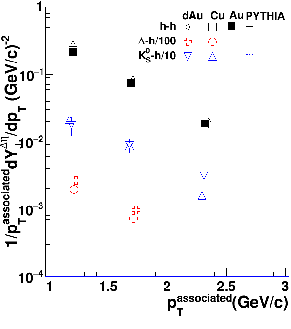 |
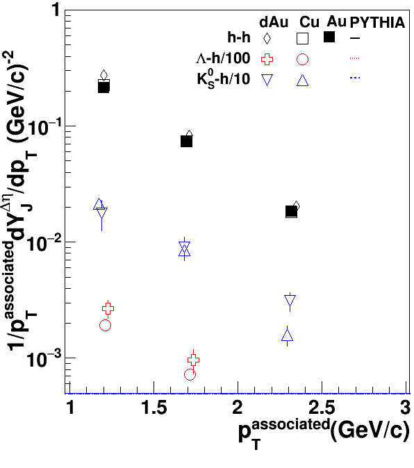 |
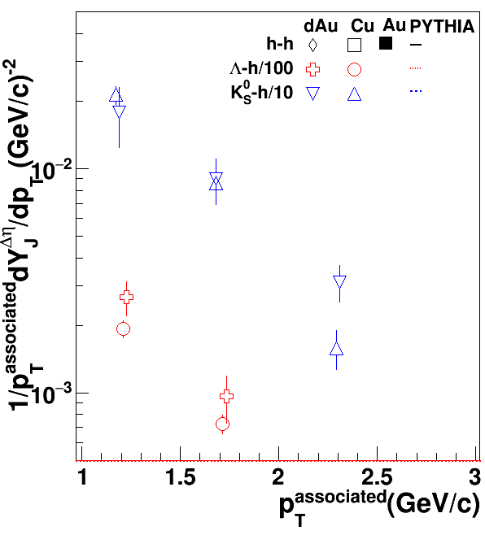 |
ong the PAs we thought it would be
meaningful to add the PYTHIA back in to this figure. There is a
small observation to be made that PYTHIA gets the mass ordering exactly
opposite to what we observe in the data. We don't think it is
worth making a big deal of this but that it is worth making. We
also moved the observation about the apparent mass ordering to this plot
and tried a different wording to appease objections to the use of the
word "systematically."
Conclusion - some centrality dependence (but no strong statement on what
centrality dependence)
Fig. 5
Remove white space
We did this and also tweaked the legend and then compared to the h-h data as a line.
Conclusion - PYTHIA more or less gets stuff right (worded squishily)